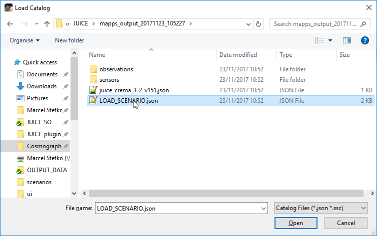
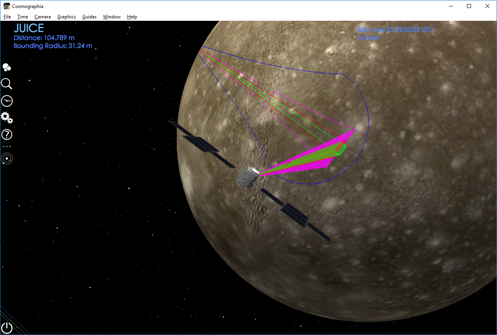

This plugin allows you to import MAPPS data (attitude + instrument operation) as a Cosmographia scenario.
This plugin requires python2.7 with packages pyqt5 and simplejson installed.
If you use Anaconda, you can install using these steps:
1. Open Anaconda prompt, and navigate to root folder of this plugin JUICE_plugin_win.
2. conda env create (This creates a new environment called juice_plugin with all
required packages and correct Python version.)
3. activate juice_plugin (This activates the newly-created environment.)
4. python run_plugin.py (The GUI should be displayed now.)

For subsequent runs, you need to activate juice_plugin environment every time you restart Anaconda prompt.
The program requires input of 3 data files:
1. MAPPS Attitude Data: This is a MAPPS .csv file created using
MAPPS -> Data -> Generate Datapack -> Quaternions+AttitudeMatrix. It contains
required quaternion data for generating a new CK kernel.
2. MAPPS Timeline Dump: This is a MAPPS .asc file created using
MAPPS -> Data -> Dump Timeline Data.... It contains information about instrument
activity.
3. Cosmographia Scenario File: This is a .json file that you would normally use to load
a JUICE Cosmographia scenario without any observations (i.e. only to display JUICE’s trajectory).
This file should reside in ../JUICE/scenarios folder.
Target body specifies which body is used to display instrument ground tracks. For moon flybys, Observation decay time [min] specifies time duration for which To generate a scenario, click Generate files!. A mapps_output_yyyymmdd_HHMMSS folder will be created
in the Cosmographia JUICE/ directory. Inside this folder all necessary files are stored. No
other files are modified by this script.
To launch this scenario, go to Cosmographia -> File -> Open Catalog..., and open the LOAD_SCENARIO.json
file. You need to set the time of interest and find JUICE manually, using Cosmographia’s controls.


Some settings can be adjusted in juice_plugin.ini in the [itl] section:
- mode_sensors: This dictionary defines which instrument modes are considered “on” states, and which
sensor FOV is associated with each mode. Each entry has the format "instrument_mode": "sensor_fov_name".
- instruments: This is a list of instrument names which become selectable in the GUI.
- sensor_colors: This dictionary defines for each instrument an RGB color which is used to display
sensor FOVs and ground tracks.
SCIENCE_20pct.